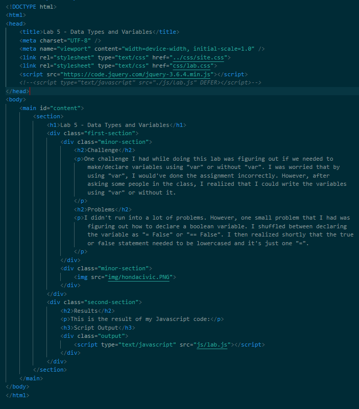
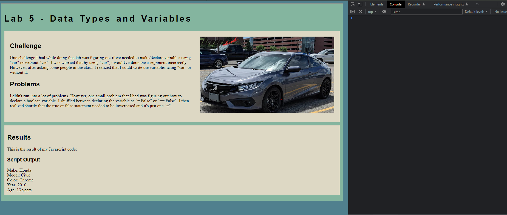
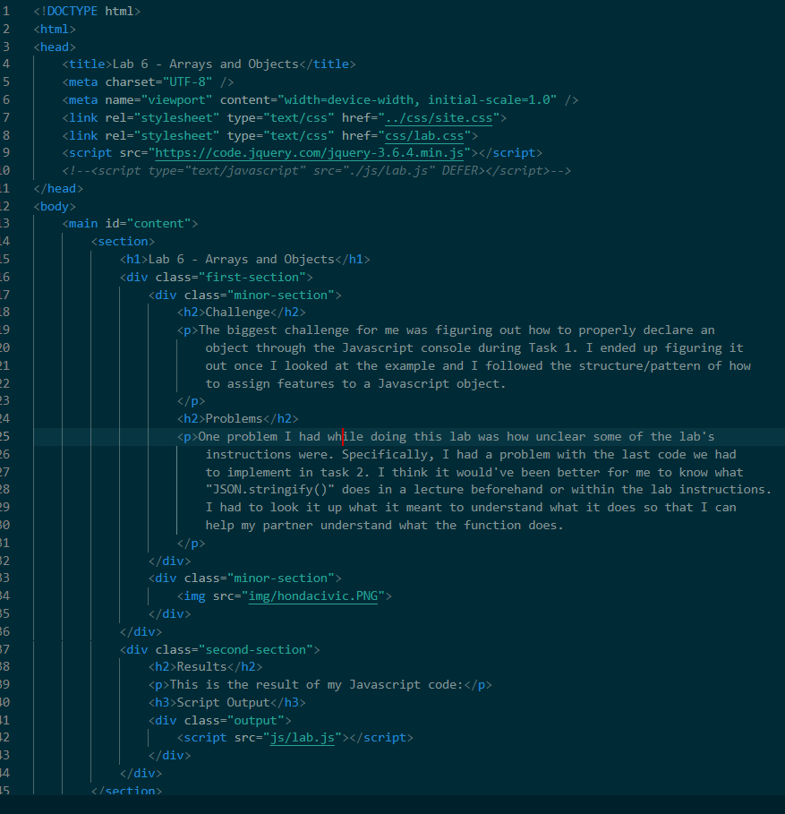
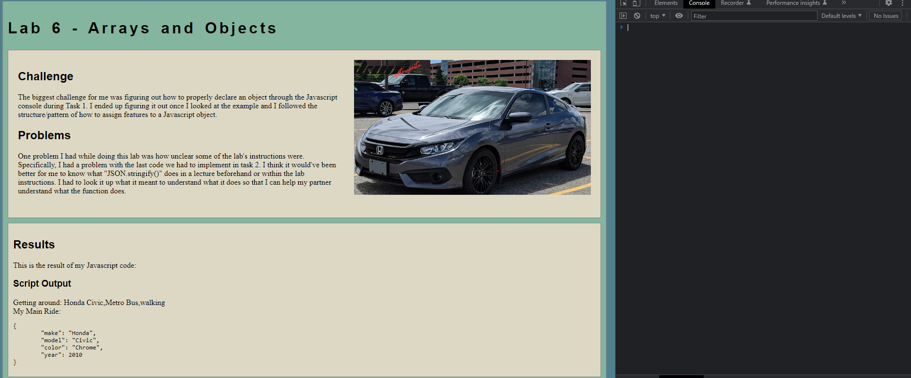
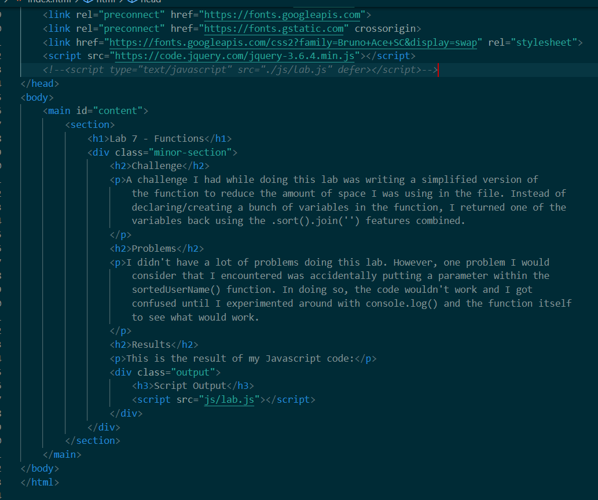
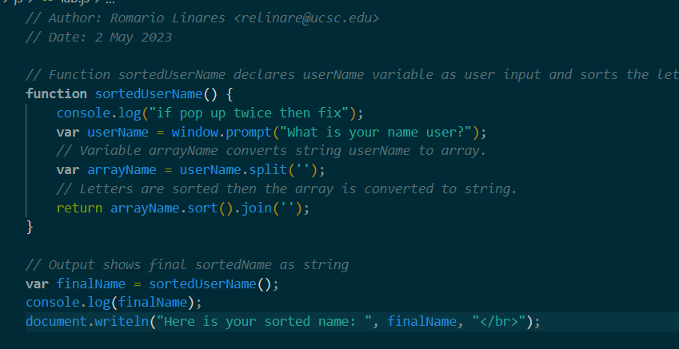
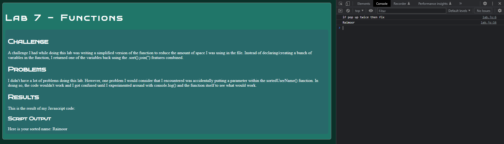

Lab 14 - Debugging Tools & Strategies
Challenge
The biggest challenge I had was figuring out what kind of issue each lab error had. The labs that I featured on this lab website all had instances where something was wrong in the HTML file. However, it took me a while to find if the errors were appearing in their Javascript files or their HTML files. I used several debugging strategies like commenting out code and using console.log() to see what my issues were.
Problems
The most common problem I ran into while debugging previous labs was that they all had the exact same issue with their Javascript. Specifically, functions would run twice in the Javascript file and I couldn't figure out what it was until I started debugging by using console.log(). I found out that I was referring to the Javascript file twice in the HTML file which caused the functions in those labs to run twice.
Results
Here are the results of debugging previous labs:
Debugging
Lab 5:
When looking in the console, it appeared that the Javascript function was running without an input for the function when the page opened up. It was almost as if the function ran once before it ran the second time which made it work. To fix this, I commented out the script tag that was placed in the header section of my HTML. I did this because there was already a script tag in the output div section calling for the Javascript file. Having the script tag in both the header and output div made the HTML code call for the functions in the Javascript file twice.
 Lab 6:
This lab had the same issue Lab 5 did. When looking in the console, it appeared that the Javascript function was running without an input for the function when the page opened up. It was almost as if the function ran once before it ran the second time which made it work. To fix this, I commented out the script tag that was placed in the header section of my HTML. I did this because there was already a script tag in the output div section calling for the Javascript file. Having the script tag in both the header and output div made the HTML code call for the functions in the Javascript file twice.
 Lab 7:
Lab 7 had the same issue as the previous labs did. However, it was more challenging to fix because lab 7 had a window prompt input that made it more confusing if it was an HTML or Javascript problem. I wrote some console.log() functions in the Javascript function for debugging to see what the issue was. I saw in the console that certain messages were printing twice which also made sense seeing that the window prompt input screen popped up twice as well. When I looked over my HTML code, I saw that there were two instances where I referenced the Javascript file so I commented out the one in the header to make it so the HTML file only calls for the Javascript file once.
  